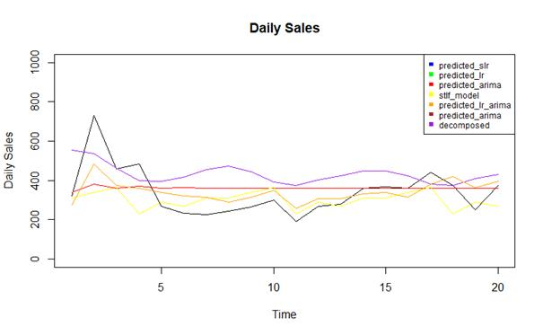
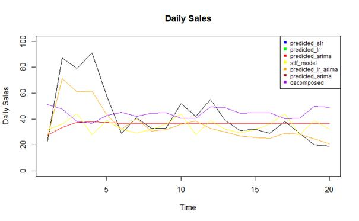

IE 360 – STATISTICAL FORECASTING AND TIME SERIES
2020-2021 TERM PROJECT
INSTRUCTOR: MUSTAFA GÖKÇE BAYDOÐAN
PROJECT GROUP: GROUP 2
Disclamer: The data imported in this Project is credited to Trendyol.com ®
TABLE OF CONTENTS
INTRODUCTION…………………………………………………………………………. 3
MODELS…………………………………………………………………………………… 3
OVERVIEW OF THE DATA…………………………………………………………….. 4
PRODUCTS AND ACCOMPANIED MODELS………………………………………… 5
CONCLUSION……………………………………………………………………………... 17
APPENDIX……………………………………………………………………………….....18
REFERENCES……………………………………………………………………………..28
INTRODUCTION
Statistical forecasting refers to making predictions for future values based on past data. It employs methods such as time series, cross-sectional or longitudinal data. For the purpose of this project, time series are used to estimate the future sales of eight products on sale on Trendyol.com. To analyze the data, it must be converted into time series. Time series analysis is useful in a way to extract relevant data to the product being forecasted and other characteristics, such as seasonality, trends, and autocorrelation. After embarking on with the analysis, one is able to see the critical points of the data. After the analysis, several models should be considered to fit the data based on multiple values. These values, such as mean absolute percentage error, and mean absolute error, lead us to the best model fitting the data of the product. Moving on with the model selection, the critical points then can be eliminated if it’s considered to be affecting the future values. For example, if a holiday season has a crucial effect on the sales, the effect should be removed from the model as it resonates on daily regular sales. Finally, when the elimination is done, every factor is included and the accompanying model is settled, the model can be used to forecast future sales. The means through is R coding language for forecasting in this project.
MODELS
Several models can be used to fit a time series data. These models include moving average models, exponential moving average models, naive model, autoregressive models, ETS models, ARIMA models, single and multiple regression models, dynamic regression models, and approaches to generate coherent forecasts such as bottom to top, top to bottom and middle-out approaches.
Moving average models employs linearity to forecast a future value. It’s used for univariate time series. The future predictions are based on solely the linearity of the past and current data. As a type of a moving average model, exponential moving average model utilizes weights on the past data. The most recent data is corresponded with a larger weight to forecast the future values. Moving average models are a type of naive model. Naive models don’t require any underlying assumptions other than the past data. Factors such as autocorrelation, seasonality, trends, and special dates are not included in naive models.
Contrary to moving average models, Autoregressive models do not necessarily have to be stationary. Autoregressive models are used to explain random occurences. The model suggests that the forecast depends on the linearity of past data and a stochastic term. A stochastic term is a random term and it’s impossible to predict the term fully correct. Autoregressive models are a component of autoregressive–moving-average, and autoregressive integrated moving average models. Autoregressive integrated moving average model or ARIMA is crucial in our case. ARIMA model benefits the forecast by removing non-stationarity using differencing once, or a several times depending on the data. ARIMA models are generally denoted as ARIMA(p,d,q). The p in the parentheses meaning the number of time lags, d meaning the number of times the data is differenced to remove non-stationarity, and finally, q corresponding to the moving average term. ARIMA models can be
estimated by using the Box-Jenkins Method. However, the R function, auto.arima(), can be used to model the data automatically.
Regression models consist of including factors in the model that alters the future predictions. For a single regression model, the most significant factor is selected after performing an ANOVA test. After the selection, the model is set by R code lm(x ~ y, data). With multiple regression, several factors can be included in the model after performing an ANOVA test. With factors having high correlation, the less significant one should be removed to maintain integrity in the model. Dynamic regression explains an additional random factor’s effect on the initial prediction over time.
ETS models consist of error, trend, seasonality, as the abbreviation suggests. All ETS models are based on non-stationary data while ARIMA models can be stationary. The model focuses on seasonality and trends on time series univariate.
Lastly, coherent forecast approaches apply to multiple products, and their respective families. Mentioned approaches only work with strictly hierarchical aggregation structures. These approaches don’t work with groups. They involve first generating forecasts for the series on hand, and then disaggregating these down the hierarchy for the top-down and up the hierarchy for the bottom-up approaches until the last item. The middle-out approach combines bottom-up and top-down approaches. Firstly, a middle layer is chosen and forecasts are generated for all the series at this level. Then, from the layer, bottom-up and top-down approaches are used for the forecast.
OVERVIEW OF THE DATA
The data from the eight products is imported to RStudio and converted to time series. At first glance, the data from all the products seem completely random with partial seasonality, and trends. After checked for characteristics, plots show that every single one of them contain traces of seasonality and trend as well as a few outliers. Plots show no sinusoidal functions, thus, no harmonic movement in the data. On a few occasions, timeseries data shows that sales go up irregularly. These specific dates correspond to holiday seasons. To check whether holiday seasons affect the data, we use regression models. The holiday seasons we tested are as follows, Black Friday, Valentine’s Day, Mother’s Day, Father’s Day, Ramadan, and New Year’s. After setting the regression model for all products, using the summary() function in R, the only holiday that is significant is seen to be Black Friday. Thus, for all product models, Black Friday season is excluded from the data as it affects the regular sale predictions. Similar to holiday seasons, the other data columns in the time series is checked if they had an excessive effect on the sales. Dynamic regression is used to evaluate the claim with basket count, visit count, and add count. However, since they are all interdependent, the dynamic regression model shows no significance whatsoever between the columns.
Figure 1: Daily Sales of Product 31515569 Over Time
PRODUCTS AND ACCOMPANIED MODELS
For each product, there’s a different model that fits better than the others. For each product, simple linear regression, linear regression, arima model, arima model with linear regression, STLF model (Seasonal and Trend decomposition using Loess Forecasting model), and decomposition is tested to select the best model fit. Selection is solely dependent on the MAPE value. A lower MAPE value indicates that the model fits better to the time series data, since MAPE shows the mean absolute percentage error, it makes sense that a low MAPE value is an indication of a good model fit. The results for each product are as follows,
Product 31515569
|
variable mse mad mape |
|
1 predicted_slr Inf 7.236904e+246 8.424801e+243 |
|
2 predicted_lr Inf 7.236904e+246 8.424801e+243 |
|
3 predicted_arima 33687.60 1.392713e+02 3.013369e-01 |
|
4 predicted_lr_arima 11693.54 8.112254e+01 1.661093e-01 |
|
5 predicted_stlf 80690.35 2.621942e+02 7.060651e-01 |
|
6 predicted_decom 51161.78 2.039650e+02 5.663967e-01 |
Table 1: MSE, MAD, MAPE Values from Different models of Product 31515569
From the table, the lowest MAPE value corresponds to ARIMA model with linear regression. Thus, it’s the best fit for the product.
Figure 2: Forecast in Units Over Time for Product 31515569 with the Best Model Fit
Figure 3: Forecast Comparison with Other Models for Product 31515569
Product 32939029
|
variable mse mad mape |
|
1: predicted_slr 1.431854e+57 8.461250e+27 Inf |
|
2: predicted_lr 1.431854e+57 8.461250e+27 Inf |
|
3: predicted_arima 4.149693e+02 1.511438e+01 Inf |
|
4: predicted_lr_arima 5.740437e+01 5.493045e+00 Inf |
|
5: predicted_stlf 3.694727e+03 5.640661e+01 Inf |
|
6: predicted_decom 6.640471e+03 7.739839e+01 Inf |
Table 2: MSE, MAD, MAPE Values from Different models of Product 32939029
From the table, the lowest MAD value corresponds to ARIMA model. Thus, it’s the best fit for the product. MAPE values are not used in comparison for this case as their value doesn’t differ from each other.
Figure 4: Forecast in Units Over Time for Product 32939029 with the Best Model Fit
Figure 5: Forecast Comparison with Other Models for Product 32903929
Product 3904356
|
variable mse mad mape |
|
1: predicted_slr 7.073758e-01 0.841028664 Inf |
|
2: predicted_lr 7.073758e-01 0.841028664 Inf |
|
3: predicted_arima 3.548028e-06 0.001880499 Inf |
|
4: predicted_lr_arima 4.760970e-04 0.020599287 Inf |
|
5: predicted_stlf 2.814758e-04 0.011602629 Inf |
|
6: predicted_decom 5.036980e-03 0.063144919 Inf |
Table 3: MSE, MAD, MAPE Values from Different models of Product 3904356
From the table, the lowest MAD value corresponds to ARIMA model. Thus, it’s the best fit for the product. MAPE values are not used in comparison for this case as their value does not differ from each other.
Figure 6: Forecast in Units Over Time for Product 3904356 with the Best Model Fit
Figure 7: Forecast Comparison with Other Models for Product 3904356
Product 4066298
|
variable mse mad mape |
|
1: predicted_slr Inf Inf Inf |
|
2: predicted_lr Inf Inf Inf |
|
3: predicted_arima 33109.294 118.98932 0.5806212 |
|
4: predicted_lr_arima 3058.023 48.40104 0.3343337 |
|
5: predicted_stlf 30419.651 109.15271 0.5026051 |
|
6: predicted_decom 37457.735 108.13554 0.4438671 |
Table 4: MSE, MAD, MAPE Values from Different models of Product 4066298
From the table, the lowest MAPE value corresponds to ARIMA model with Linear Regression. Thus, it’s the best fit for the product.

Figure 8: Forecast in Units Over Time for Product 4066298 with the Best Model Fit
Figure 9: Forecast Comparison with Other Models for Product 4066298
Product 5926527
|
variable mse mad mape |
|
1: predicted_slr 3.893821e+09 1.406316e+04 Inf |
|
2: predicted_lr 3.893821e+09 1.406316e+04 Inf |
|
3: predicted_arima 1.626841e+00 9.510262e-01 Inf |
|
4: predicted_lr_arima 2.600669e+00 9.967404e-01 Inf |
|
5: predicted_stlf 2.239371e+00 1.130881e+00 Inf |
|
6: predicted_decom 2.073538e+00 1.021640e+00 Inf |
Table 5: MSE, MAD, MAPE Values from Different models of Product 5926527
From the table, the lowest MAD value corresponds to ARIMA model. Thus, it’s the best fit for the product. MAPE values are not used in comparison for this case as their value does not differ from each other.
Figure 10: Forecast in Units Over Time for Product 5926527 with the Best Model Fit
Figure 11: Forecast Comparison with Other Models for Product 5926527
Product 6676673
|
variable mse mad mape |
|
1: predicted_slr Inf 3.536131e+206 4.830780e+203 |
|
2: predicted_lr Inf 3.536131e+206 4.830780e+203 |
|
3: predicted_arima 13961.322 8.915444e+01 2.886000e-01 |
|
4: predicted_lr_arima 7172.427 6.871835e+01 2.078257e-01 |
|
5: predicted_stlf 14976.947 8.304279e+01 2.165356e-01 |
|
6: predicted_decom 20886.263 1.265166e+02 4.457992e-01 |
Table 6: MSE, MAD, MAPE Values from Different models of Product 6676673
From the table, the lowest MAPE value corresponds to ARIMA model. Thus, it’s the best fit for the product.
Figure 12: Forecast in Units Over Time for Product 6676673 with the Best Model Fit

Figure 13: Forecast Comparison with Other Models for Product 6676673
Product 7061886
|
variable mse mad mape |
|
1: predicted_slr 1.365059e+142 2.612526e+70 1.920975e+68 |
|
2: predicted_lr 1.365059e+142 2.612526e+70 1.920975e+68 |
|
3: predicted_arima 1.654208e+03 2.672492e+01 4.093273e-01 |
|
4: predicted_lr_arima 3.940499e+02 1.281498e+01 1.968616e-01 |
|
5: predicted_stlf 2.043986e+03 2.830530e+01 3.548158e-01 |
|
6: predicted_decom 1.517635e+03 2.647109e+01 4.178958e-01 |
Table 7: MSE, MAD, MAPE Values from Different models of Product 7061886
From the table, the lowest MAPE value corresponds to ARIMA model. Thus, it’s the best fit for the product.
Figure 14: Forecast in Units Over Time for Product 7061886 with the Best Model Fit
Figure 15: Forecast Comparison with Other Models for Product 7061886
Product 85004
variable mse mad mape |
1: predicted_slr 1.001791e+64 2.238154e+31 2.572594e+29 |
2: predicted_lr 1.001791e+64 2.238154e+31 2.572594e+29 |
3: predicted_arima 4.674561e+02 1.478031e+01 3.176420e-01 |
4: predicted_lr_arima 1.351231e+02 8.466822e+00 1.716606e-01 |
5: predicted_stlf 4.780604e+02 1.442692e+01 3.016014e-01 |
6: predicted_decom 5.249974e+02 1.810596e+01 4.927112e-01 |
Table 8: MSE, MAD, MAPE Values from Different models of Product 85004
From the table, the lowest MAPE value corresponds to ARIMA model. Thus, it’s the best fit for the product.
Figure 16: Forecast in Units Over Time for Product 85004 with the Best Model Fit

Figure 17: Forecast Comparison with Other Models for Product 85004
CONCLUSION
This report is aimed at determining the best models for predictions of daily sales for eight different products which are currently being sold on one of the biggest e-commerce companies in Turkey, Trendyol. By using the knowledge we gained from the Statistical Forecasting and Time Series course, the necessary data analysis was performed for each product, by converting their daily sales data to time series. For accurate forecasting, several possible methods were being performed to find the best-fit candidate. These methods, which are discussed in detail in the related chapter, were then compared with the train data to determine accuracy. After determining the best model with fewer errors, the final forecasts were made to predict the future sales of each product. To comment on results, it can be achieved that any different data may have its own kind of features such as fluctuations, trends, and as such. Different datasets may require different prediction models for accurate forecasting, thus, each data should be treated distinctively when its future values is being forecasted.
APPENDIX
install.packages("jsonlite")
install.packages("httr")
install.packages("data.table")
install.packages("lubridate")
install.packages("forecast")
install.packages("ggplot2")
install.packages("xts")
install.packages("zoo")
# install.packages("tidyverse")
# install.packages("rlang")
# install.packages("dplyr")
#require(tidyverse)
require(jsonlite)
require(httr)
require(data.table)
require(forecast)
require(zoo)
require(xts)
require(lubridate)
require(ggplot2)
# require(dplyr)
# require(rlang)
# install.packages("tibble")
# require(tibble)
#sessionInfo()
library(xts)
library(timeDate)
get_token <- function(username, password, url_site){
post_body = list(username,password)
post_url_string = paste0(url_site,'/token/')
result = POST(post_url_string, body = post_body)
# error handling (wrong credentials)
if(result$status_code==400){
print('Check your credentials')
return(0)
}
else if (result$status_code==201){
output = content(result)
token = output$key
}
return(token)
}
get_data<-function(start_date='2020-05-07', token, url_site){
post_body = list(start_date=start_date,username="Group2",password="vahJADDus5zKAdHe")
post_url_string = paste0(url_site,'/dataset/')
header = add_headers(c(Authorization=paste('Token',token,sep=' ')))
result = GET(post_url_string, header, body = post_body)
output = content(result)
data = data.table::rbindlist(output)
data[,event_date:=as.Date(event_date)]
data = data[order(product_content_id,event_date)]
return(data)
}
#get_token("Group2","vahJADDus5zKAdHe","http://167.172.183.67")
data<-get_data("2020-05-07","a09e15e32a58726b702f78979d74dbda7c9594bf","http://167.172.183.67")
#Enter the product number to these two lines
product_chosen <- product_85004
chosen <- '85004'
product_chosen <-data[ which(data$product_content_id==chosen), ]
dates<-seq(as.Date("2019-04-30"),length=length(product_chosen$sold_count), by="days")
prod315_xts<-xts(product_chosen[,c("price","sold_count")], order.by = dates)
n.dates <- as.Date(c("2019-11-25", "2019-11-26", "2019-11-27","2019-11-28","2019-11-29"))
black_friday <- as.xts(rep(1, 5), order.by = n.dates)
black_friday_1 <- merge(black_friday, prod315_xts, fill = 0)
prod315_xts <- merge(black_friday_1$black_friday, prod315_xts, fill = 0)
model_blackfriday <- lm(sold_count ~ price + black_friday, data =prod315_xts )
summary(model_blackfriday)
mean_315<-mean(product_chosen$sold_count[length(product_chosen)-50:length(product_chosen)])
for(i in 1:length(prod315_xts$black_friday)) {
if(black_friday_1$black_friday[i]=="1"){
black_friday_1$sold_count[i]=mean_315
i=i+1
}}
for(i in 1:length(prod315_xts$black_friday)) {
if(black_friday_1$black_friday[i]=="1"){
product_chosen$sold_count[i]=mean_315
i=i+1
}}
sold_count_1<-prod315_xts[,"sold_count"]
plot(sold_count_1)
black_friday_1$black_friday.1=NULL
train_315<-ts(black_friday_1$sold_count[1:(length(black_friday_1$sold_count)-20)], frequency = 7)
test_315<-ts(black_friday_1$sold_count[(length(black_friday_1$sold_count)-19):length(black_friday_1$sold_count)], frequency = 7)
stlf_model_315<-stlf(train_315,h=20)
stlf_model_315$mean
plot(stlf_model_315)
arima_model_315<-auto.arima(train_315,stepwise=FALSE)
summary(arima_model_315)
prediction_main=forecast_315<-forecast(arima_model_315,h=20)
plot(prediction_main)
test_data_315[,predicted_arima_main:=as.vector(prediction_main$mean)]
##....----------------------------------------------------------------------
decomposed_product_315_multiplicative<-decompose(train_315,type="multiplicative")
plot(decomposed_product_315_multiplicative)
decomposed_product_315_additive<-decompose(train_315,type="additive")
plot(decomposed_product_315_additive)
decomposed_product_315_multiplicative$trend
first_trend_315=0
trend_model_315<- auto.arima(decomposed_product_315_multiplicative$trend,stepwise = FALSE)
forecasted_trend_model_315<-forecast(trend_model_315, h=3)
plot(forecasted_trend_model_315)
decomposed_product_315_multiplicative$trend[1:3]=first_trend_315
decomposed_product_315_multiplicative$trend[(length(train_315)-2):length(train_315)]=forecasted_trend_model_315$mean
plot(decomposed_product_315_multiplicative$trend)
model_product_315<- auto.arima(decomposed_product_315_multiplicative$trend, stepwise = FALSE)
detrend_315=train_315/(decomposed_product_315_multiplicative$seasonal*decomposed_product_315_multiplicative$trend)
detrend_315_model=auto.arima(detrend_315,stepwise = FALSE)
model_forecast_315=predict(detrend_315_model, n.ahead=20)$pred
model_forecast_315
model_forecasted_315=model_forecast_315*(forecast(model_product_315, h=20)$mean*c(decomposed_product_315_multiplicative$figure[3:7],decomposed_product_315_multiplicative$figure[1:7],decomposed_product_315_multiplicative$figure[1:7],decomposed_product_315_multiplicative$figure[1:1]))
model_forecasted_315
summary(model_forecasted_315)
plot(model_forecasted_315)
plot(product_chosen$sold_count, xlab ="Time",ylab = "Daily Sales", main="Number of Product 31515569 Sales")
##.......
arima1<-auto.arima(train_315)
forecast_315<-forecast(arima1,h=20)
plot(forecast_315)
meanfor_315<-as.numeric(forecast_315$mean)
test_315_num<-as.numeric(test_315)
MAE<-mean(abs(meanfor_315-test_315_num))
MAPE<-100*mean(abs((meanfor_315 - test_315_num)/test_315_num))
print(MAPE)
for_dates<-seq(as.Date("2020-03-20"),length=20, by="days")
forecast315_xts<-xts(forecast_315$mean,order.by = for_dates)
plot(forecast315_xts)
plot(forecast315_xts, main = 'Forecast Comparison', ylim = c(0, 1500))
lines(forecast315_xts, col = "blue")
plot(test_315, main = 'Forecast Comparison', ylim = c(-100, 1600))
lower <- xts(forecast_315$lower[,2], order.by = for_dates)
upper <- xts(forecast_315$upper[,2], order.by = for_dates)
lines(lower, col = "blue", lty = "dashed")
lines(upper, col = "red", lty = "dashed")
#.................................................
plot(product_chosen[,c("visit_count","sold_count")],main="Daily Sales",xlab="Visit",ylab="Sales Quantity")
product_chosen[,day:=weekdays(event_date)]
product_chosen[,is_weekend:=ifelse(isWeekend(event_date),1,0)]
test_data_315=tail(product_chosen,20)
product_315=product_chosen[1:(nrow(product_chosen)-20)]#train yani
fit=lm(sold_count~visit_count,data=product_chosen)
fit
summary(fit)
checkresiduals(fit)
coef=fit$coefficients
coef
fit$residuals
plot(product_chosen[,c("visit_count","sold_count")],main="Daily Sales",xlab="Visit",ylab="Sales Quantity")
abline(coef[1],coef[2],col="red")
plot(fit)
product_chosen[,logsales:=log(sold_count)]
product_chosen[,logvisit:=log(visit_count)]
is.na(product_chosen)<-sapply(product_chosen , is.infinite)
fit=lm(logsales~logvisit+as.factor(is_weekend),data=product_chosen,na.action = na.omit)
length(is_weekend)
class(is_weekend)
summary(fit)
checkresiduals(fit)
test_data_315[,logsales:=log(sold_count)]
test_data_315[,logvisit:=log(visit_count)]
test_data_315[,logpredicted:=predict(fit,test_data_315)]
test_data_315[,predicted_slr:=exp(logpredicted)]
fit=lm(logsales~logvisit+as.factor(day),data=product_chosen,na.action = na.omit)
summary(fit)
checkresiduals(fit)
test_data_315[,logpredicted:=predict(fit,test_data_315)]
test_data_315[,predicted_lr:=exp(logpredicted)]
ts.plot(test_data_315$sold_count,ylim=c(50,900))
lines(test_data_315$predicted_slr,col="blue")
lines(test_data_315$predicted_lr,col="red")
### arima###
ts_315=ts(product_chosen[,c("sold_count")],frequency = 7)
ts.plot(ts_315,main="Daily Sales",xlab="Time",ylab="Sales Quantity")
arima_model=auto.arima(ts_315)
summary(arima_model)
checkresiduals(arima_model)
model_fitted <- ts_315 - residuals(arima_model)
ts.plot(ts_315, xlab = "Time", ylab = "Daily Sales",main="Daily Sales")
points(model_fitted, type = "l", col = 2, lty = 2)
predictions=forecast(arima_model,h=20)
plot(predictions)
test_data_315[,predicted_arima:=as.vector(predictions$mean)]
ts.plot(test_data_315$sold_count,ylim=c(0,1000), xlab = "Time", ylab = "Daily Sales",main="Daily Sales")
lines(test_data_315$predicted_slr,col="blue")
lines(test_data_315$predicted_lr,col="green")
lines(test_data_315$predicted_arima,col="red")
lines(as.numeric(stlf_model_315$mean), col="yellow")
lines(as.numeric(model_forecasted_315),col="pink")
lines(as.numeric(test_data_315$predicted_arima_main),col="brown")
test_data_315[,predicted_stlf:=as.numeric(stlf_model_315$mean)]
test_data_315[,predicted_decom:=as.numeric(model_forecasted_315)]
##dynamic##
data_ts=ts(product_chosen[,c("sold_count")],frequency = 7)
visits<-as.matrix(product_chosen[,"visit_count"])
arima_model_with_var <- auto.arima(data_ts,xreg= visits)
arima_model_with_var
plot(data_ts)
summary(arima_model_with_var)
checkresiduals(arima_model_with_var)
model_fitted_2 <- data_ts - residuals(arima_model_with_var)
ts.plot(data_ts, xlab = "Time", ylab = "Daily Sales",main="Daily Sales")
points(model_fitted_2, type = "l", col = 2, lty = 2)
#predictions
visits_test<-as.matrix(test_data_315[,"visit_count"])
predictions=forecast(arima_model_with_var,h=20,xreg=visits_test)
plot(predictions)
test_data_315[,predicted_lr_arima:=as.vector(predictions$mean)]
ts.plot(test_data_315$sold_count,ylim=c(0,1000), xlab = "Time", ylab = "Daily Sales",main="Daily Sales")
lines(test_data_315$predicted_slr,col="blue")
lines(test_data_315$predicted_lr,col="green")
lines(test_data_315$predicted_arima,col="red")
lines(as.numeric(stlf_model_315$mean), col="yellow")
lines(as.numeric(model_forecasted_315),col="purple")
lines(as.numeric(test_data_315$predicted_arima_main),col="brown")
lines(test_data_315$predicted_lr_arima,col="orange")
legend("topright", c("predicted_slr", "predicted_lr", "predicted_arima","stlf_model", "predicted_lr_arima", "predicted_arima" ,"decomposed"), col = c("blue","green","red","yellow","orange","brown" ,"purple"),
cex = 0.75, pch = 15)
pred_datatable=test_data_315[,.(event_date,sold_count,predicted_slr,predicted_lr,predicted_arima,predicted_lr_arima,test_data_315$predicted_arima_main,predicted_stlf,predicted_decom)]
melted=melt(pred_datatable,id.vars=c(1,2))
summary_result=melted[,list(se=(value-sold_count)^2,
ad=abs(value-sold_count),
ape=abs(value-sold_count)/sold_count,sold_count),by=list(event_date,variable)]
summary_result=summary_result[,list(mse=mean(se),mad=mean(ad),mape=mean(ape)),by=list(variable)]
summary_result
REFERENCES